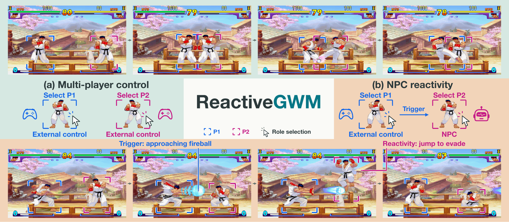
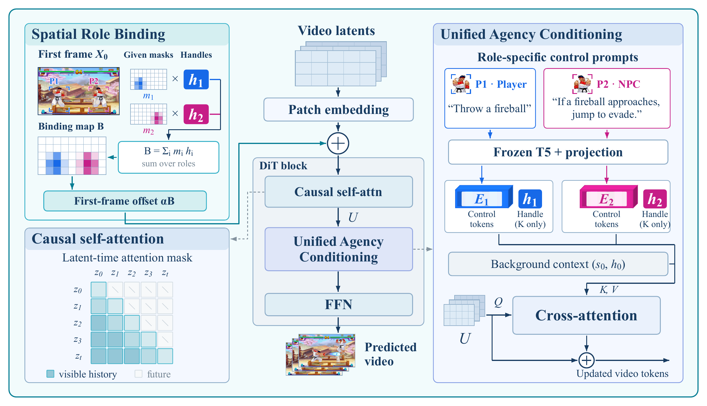

Choose who is controlled
Initial-frame masks identify each character, including characters with the same appearance. Assign each one a player or NPC role.
Anonymous research project
Assign control roles to individual characters. Direct the players with actions, and let NPCs respond to interactions through conditional rules.

Existing game world models typically bind player and NPC roles to fixed characters. This limits multi-character games, where different characters may receive external control and NPCs must react to player-triggered interactions. ReactiveGWM assigns flexible control modes at initialization and jointly simulates externally controlled players and reactive NPCs. Spatial Role Binding grounds learned character handles in initial-frame regions using instance masks. Unified Agency Conditioning encodes player actions and conditional NPC rules into control-token groups, binding each group to the corresponding character handle. We study this interface in two shared-view 2D games: Street Fighter III and Hikou no mizu.
Initial-frame masks identify each character, including characters with the same appearance. Assign each one a player or NPC role.
Players receive action sequences. NPCs receive an instruction describing a trigger and the response to execute.
The model generates all characters together and uses causal video context to interpret NPC rules as interactions unfold.
The method
Spatial Role Binding anchors character handles in the first frame. Unified Agency Conditioning connects each character’s actions or rule to its handle through cross-attention.

Handles are injected into cross-attention keys; values carry control text. Causal self-attention reads the current and past latent frames. Training uses flow matching over future video latents.
View full-size figure ↗01 / Generated rollouts
Two fighters share one scene. External player actions provide the interaction context for the NPC’s conditional response.
10 selected demos
Video 1 / 10
02 / Generated rollouts
One selected example for each of nine reaction rules, plus a passive no-op reference, from the 23 September HNM benchmark run.
10 selected demos
Video 1 / 10
Matched method comparisons
Matched SF3 and HNM comparisons, using the same initial frame and Player actions.
(a) SF3 · Action execution
P1 · KenP2 · Yang
(b) SF3 · Character selection
P1 · YangP2 · Necro
(c) SF3 · Action execution
P1 · RyuP2 · Alex
(d) SF3 · Action execution
P1 · RyuP2 · Alex
(e) HNM · Action execution
P1 · HikouP2 · Hana
(f) HNM · Character selection
P1 · HanaP2 · HanaP3 · HanaP4 · HanaP5 · Hana
Controlled Player interventions
Each comparison keeps the initial scene, complete NPC rule and generation seed fixed. Only the Player action sequence changes: original, delayed, or removed. Explore these curated qualitative examples on one shared video clock.
Street Fighter III
NPC rule: If the opponent retreats, then approach until close.
Player: Yun (left). NPC: Ryu (right).
Street Fighter III
NPC rule: If the opponent approaches, then retreat until safely out of reach.
Player: Dudley (left). NPC: Ibuki (right).
Street Fighter III
NPC rule: If the opponent jumps toward this NPC, then anti-air once as they descend within reach, before landing.
Player: Alex (left). NPC: Yun (right).
HNM
NPC rule: If the target player moves away from this NPC, then move toward that player until close.
Trigger Player: Hikou (middle). NPC: Hana (left). The other Hana receives no input.
HNM
NPC rule: If the target player jumps toward this NPC, then punch that player while they are airborne.
Trigger Player: Takino (middle). NPC: Hana (left). The other Player receives no input.
HNM
NPC rule: If the target player's punch or kick misses, then move toward that player and punch during their recovery.
Trigger Player: Hikou (middle). NPC: Takino (right). Hana receives no input.
Crossing & occlusion
After a throw exchanges the fighters’ sides, compare a no-op reference, a target-consistent jump, and an apparent off-target response.
Paired comparison · no-op vs jump
Paired comparison · no-op vs jump
Independent failure example
Continuous 30-second rollouts
Sustained player control and repeated NPC interactions, without resetting the session at five-second boundaries.
(a) Two externally controlled players30 s
Player P1Player P2
Two players perform movement, punches, kicks, jumps, and crouches throughout one continuous rollout.
(b) Player–NPC interaction30 s
Player P1NPC P2
The Player retreats repeatedly; the NPC approaches and follows to close the gap.
(c) Two-player overlap and crossing30 s
Player P1 · DudleyPlayer P2 · Elena
Original ReactiveGWM
Original ReactiveGWM5 s
Player P1Player P2
Original ReactiveGWM5 s
Player P1Player P2